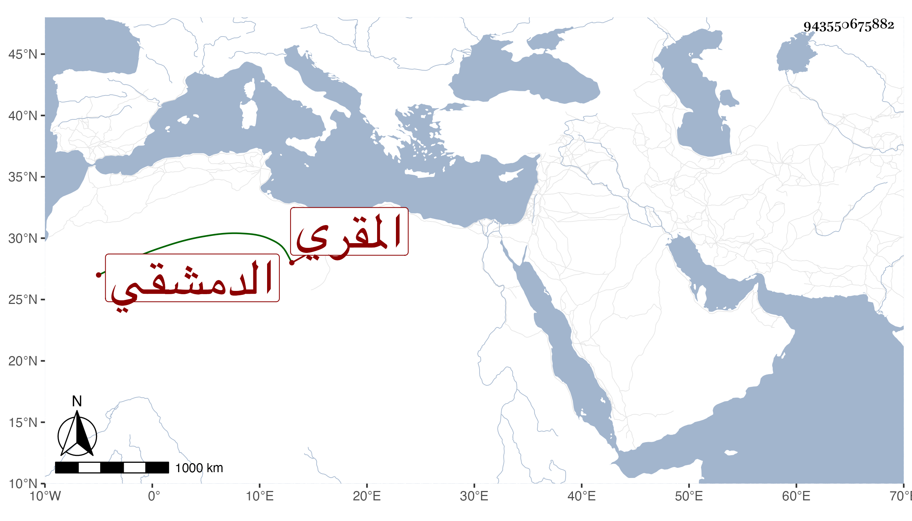

0902Sakhawi.DawLamic.ITO20230111-ara1.EIS1600.943550675882
Biography ID: 943550675882
366
عمر بن محمد بن أحمد بن علي بن الحسن بن جامع السراج بن الشمس أبا المعالي الدمشقي المقري ويعرف بابن اللبان . أخذ القراءات عن والده وتلا بالعشر على الشمس العسقلاني فيما أفاده ابن الجزري وتصدر للإقراء وكان ساكنا سليم الباطن عالية في الشطرنج . مات في شعبان سنة ثلاثين عن نحو ثمانين سنة . ذكره شيخنا في إنبائه وأورده في معجمه باختصار وقال أنه سمع صحيح مسلم على أحمد بن عبد الكريم البعلي أجاز لنا .
